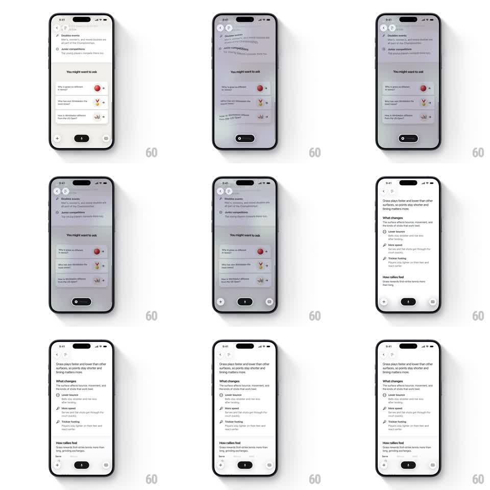

Media
Frame-by-frame

Rebuild this interaction 1:1: Monogram's prompt-to-answer sweep - tapping a suggested question spawns a glowing AI orb that sweeps across the list while the bottom bar morphs to a loading strip, then the streamed answer resolves into a structured response with icon sections.

Rebuild this interaction 1:1: Monogram's prompt-to-answer sweep - tapping a suggested question spawns a glowing AI orb that sweeps across the list while the bottom bar morphs to a loading strip, then the streamed answer resolves into a structured response with icon sections. ## Integration Integration: stack-agnostic spec - springs given as stiffness/damping, timed motions as duration + curve; map every value to your framework and animation library of choice. ## Scene AI chat screen: previous Q&A content at top, "You might want to ask" with 3 suggestion rows (emoji thumbnail, question text, chevron), bottom bar with + / dark mic pill / grid. The tapped question is about how grass courts affect tennis. ## Motion spec Pattern: tap-to-generate - orb sweep + bar morph, then staggered content reveal. - On tap, the tapped row highlights and a glowing gradient orb (~48px, red-violet) rises from it (scale 0 -> 1, 250ms, spring ~320/20) and hovers with a soft pulse (scale +/- 5%, 1.2s loop). - The orb sweeps downward across the suggestion list (translate ~120px over 600ms, ease-in-out) trailing a light blur wash that dims the rows. - Simultaneously the bottom bar morphs: + and grid fade out (200ms), mic pill compresses to a small dark loading dot (width -> 24px, 300ms). - When generation starts, the orb dissolves (opacity + scale to 0, 300ms) and the answer streams in: intro paragraph first, then "What changes" section with 3 icon bullets, then "How rallies feel" - each block fading up from 12px below, 120ms stagger, 300ms each. - The bar restores to idle once the answer completes (dot expands back to mic pill, 300ms). ## Calibration - The orb is the only color accent on a monochrome screen - keep its glow saturated. - Content blocks must appear in reading order; never reveal a lower block before an upper one. ## Reduced motion No orb travel: the tapped row flashes once (150ms), a spinner appears in the bar, and the full answer fades in at once (250ms). ## Don't miss - The orb's sweep direction follows the scroll direction of the incoming answer. - The mic pill never fully disappears - it compresses to a dot and back.